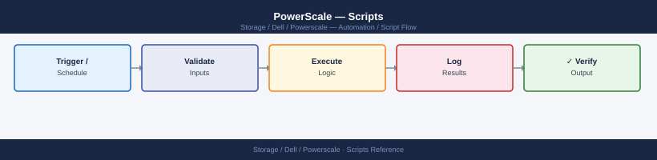

PowerScale — Scripts¶

Before you begin¶
- Access: Storage admin credentials (cluster admin or equivalent)
- Timing: safe to run during business hours unless a step is marked ⚠ (causes interruption)
- Dependencies: no active upgrades or migrations on the same infrastructure
- Logging: capture command output — paste into the change record on completion
Cluster Health Check¶
SSH to a PowerScale node and runs key isi commands to check node state, storage pool utilisation, active jobs, recent events, and SyncIQ policy status. Exits non-zero if any node is in SMARTFAIL or DOWN state.
#!/usr/bin/env perl
# powerscale_health_check.pl — Cluster health check for Dell PowerScale / OneFS
# Usage: PS_HOST=ps01.example.com PS_USER=root ./powerscale_health_check.pl
use strict;
use warnings;
my $ps_host = $ENV{PS_HOST} or die "ERROR: PS_HOST not set\n";
my $ps_user = $ENV{PS_USER} || 'root';
sub run_cmd {
my ($label, $cmd) = @_;
print "\n" . "=" x 50 . "\n";
print " $label\n";
print "=" x 50 . "\n";
my $out = qx{ssh -o StrictHostKeyChecking=no -o BatchMode=yes ${ps_user}\@${ps_host} "$cmd" 2>&1};
print $out;
return $out;
}
print "\n" . "#" x 50 . "\n";
print " PowerScale Cluster Health Check\n";
print " Host : $ps_host\n";
print " Date : " . localtime() . "\n";
print "#" x 50 . "\n";
my $isi_status = run_cmd("NODE STATUS (isi status)", "isi status");
my $pool_list = run_cmd("STORAGE POOLS", "isi storagepool list");
my $job_list = run_cmd("ACTIVE JOBS", "isi job list");
my $event_list = run_cmd("RECENT EVENTS (last 20)", "isi event list --limit 20");
my $sync_list = run_cmd("SYNCIQ POLICIES", "isi sync policies list");
# Check for SMARTFAIL or DOWN nodes in isi status output
my $issues = 0;
for my $line (split /\n/, $isi_status) {
if ($line =~ /\b(SMARTFAIL|DOWN)\b/i) {
print "\n>>> ALERT: Node issue detected: $line\n";
$issues++;
}
}
# Check for FAILED jobs
for my $line (split /\n/, $job_list) {
if ($line =~ /\bFAILED\b/i) {
print "\n>>> ALERT: Failed job detected: $line\n";
$issues++;
}
}
# Check for CRITICAL events
for my $line (split /\n/, $event_list) {
if ($line =~ /\bCRITICAL\b/i) {
print "\n>>> ALERT: Critical event: $line\n";
$issues++;
}
}
print "\n" . "=" x 50 . "\n";
if ($issues > 0) {
print " STATUS: DEGRADED — $issues issue(s) found. Review output above.\n";
exit 1;
} else {
print " STATUS: OK — No critical issues detected.\n";
exit 0;
}
How to run this script — step by step¶
Before you start — what you need
- A Linux or macOS system with Perl installed (pre-installed on most Linux distros and macOS)
- SSH access to the PowerScale cluster management IP (usually the root or admin user)
- SSH key authentication configured (the script uses BatchMode=yes which disables password prompts), or configure SSH keys first with ssh-copy-id
- The management IP or hostname of a PowerScale node
Step 1 — Save the file
- Copy the code block above into a text editor
- Save it as
powerscale_health_check.pl
Step 2 — Fill in your details
| What to change | Where to find it |
|---|---|
PS_HOST |
Management IP or hostname of your PowerScale cluster (SmartConnect zone or a node IP) |
PS_USER |
SSH username — usually root or admin |
Step 3 — Open a terminal
On Linux/macOS, open a terminal. On Windows, use Git Bash or WSL.
Step 4 — Run it
What you should see
Five labelled sections: node status (isi status), storage pools, active jobs, recent events (last 20), and SyncIQ policies. After the sections, any SMARTFAIL or DOWN nodes, FAILED jobs, or CRITICAL events are highlighted with >>> ALERT: lines. The final STATUS line shows OK or DEGRADED with a count of issues found. Exits 0 or 1.
SyncIQ Policy Monitor¶
Runs isi sync policies list -v and isi sync reports list to check the state and last run result of every SyncIQ replication policy. Prints a table of policy name, state, last run time, and duration. Exits non-zero if any policy is in a FAILED state.
#!/bin/bash
# powerscale_synciq_monitor.sh — Monitor SyncIQ policy health on Dell PowerScale
# Usage: PS_HOST=ps01.example.com PS_USER=root ./powerscale_synciq_monitor.sh
set -euo pipefail
PS_HOST="${PS_HOST:-}"
PS_USER="${PS_USER:-root}"
if [[ -z "$PS_HOST" ]]; then
echo "ERROR: PS_HOST is not set." >&2
exit 1
fi
SSH="ssh -o StrictHostKeyChecking=no -o BatchMode=yes ${PS_USER}@${PS_HOST}"
echo ""
echo "========================================"
echo " SyncIQ Policy Monitor"
echo " Host : $PS_HOST"
echo " $(date '+%Y-%m-%d %H:%M:%S')"
echo "========================================"
# Fetch policy list
POLICIES=$($SSH "isi sync policies list -v" 2>&1)
# Fetch recent reports (last 5 per policy)
REPORTS=$($SSH "isi sync reports list --limit 5" 2>&1)
echo ""
echo "--- Policy Details ---"
echo "$POLICIES"
echo ""
echo "--- Recent Reports ---"
echo "$REPORTS"
echo ""
echo "--- Policy Summary Table ---"
printf "%-30s %-12s %-25s %s\n" "POLICY" "STATE" "LAST-RUN" "STATUS"
printf "%s\n" "----------------------------------------------------------------------"
FAILED=0
while IFS= read -r line; do
[[ "$line" =~ ^(Name|---|$) ]] && continue
[[ -z "$line" ]] && continue
policy=$(echo "$line" | awk '{print $1}')
state=$(echo "$line" | awk '{print $2}')
last_run=$(echo "$line" | awk '{print $3, $4}')
[[ -z "$policy" || "$policy" == "Name" ]] && continue
status="OK"
if [[ "${state^^}" == "FAILED" ]]; then
status="FAILED"
FAILED=$((FAILED + 1))
elif [[ "${state^^}" == "RUNNING" ]]; then
status="RUNNING"
fi
printf "%-30s %-12s %-25s %s\n" "$policy" "$state" "$last_run" "$status"
done <<< "$POLICIES"
echo ""
if [[ "$FAILED" -gt 0 ]]; then
echo "STATUS: DEGRADED — $FAILED SyncIQ policy/policies in FAILED state."
exit 1
else
echo "STATUS: OK — All SyncIQ policies healthy."
exit 0
fi
How to run this script — step by step¶
Before you start — what you need
- A Linux or macOS system with Bash
- SSH access to the PowerScale cluster (the root or admin user with SSH key auth)
- The management IP or hostname of your PowerScale cluster
Step 1 — Save the file
- Copy the code block above into a text editor
- Save it as
powerscale_synciq_monitor.sh - Make it executable:
chmod +x powerscale_synciq_monitor.sh
Step 2 — Fill in your details
| What to change | Where to find it |
|---|---|
PS_HOST |
Management IP or hostname of your PowerScale cluster |
PS_USER |
SSH username (default root) |
Step 3 — Open a terminal
On Linux/macOS, open a terminal. On Windows, use Git Bash or WSL.
Step 4 — Run it
What you should see
First the raw verbose policy list and last 5 reports are printed, then a summary table with columns POLICY, STATE, LAST-RUN, and STATUS. Any policy in FAILED state is marked in the STATUS column. The final STATUS line shows OK or DEGRADED with a count of failed policies. Exits 0 or 1.
Quota Report¶
Runs isi quota quotas list -v and formats the output as a CSV-style report showing path, quota type, current usage, soft threshold, hard threshold, and percentage used. Flags any quota over 80% with a WARNING marker.
#!/bin/bash
# powerscale_quota_report.sh — Generate a quota utilisation report for Dell PowerScale
# Usage: PS_HOST=ps01.example.com PS_USER=root ./powerscale_quota_report.sh [> quota_report.csv]
set -euo pipefail
PS_HOST="${PS_HOST:-}"
PS_USER="${PS_USER:-root}"
WARN_PCT=80
if [[ -z "$PS_HOST" ]]; then
echo "ERROR: PS_HOST is not set." >&2
exit 1
fi
SSH="ssh -o StrictHostKeyChecking=no -o BatchMode=yes ${PS_USER}@${PS_HOST}"
QUOTA_OUT=$($SSH "isi quota quotas list -v" 2>&1)
# Print CSV header
echo "PATH,TYPE,USAGE_GB,SOFT_GB,HARD_GB,PCT_USED,FLAG"
OVER_THRESHOLD=0
current_path="" current_type="" usage_b=0 soft_b=0 hard_b=0
bytes_to_gb() {
local b="$1"
if [[ "$b" =~ ^[0-9]+$ && "$b" -gt 0 ]]; then
echo "scale=2; $b / 1073741824" | bc
else
echo "0.00"
fi
}
emit_row() {
[[ -z "$current_path" ]] && return
local usage_gb soft_gb hard_gb pct flag
usage_gb=$(bytes_to_gb "$usage_b")
soft_gb=$(bytes_to_gb "$soft_b")
hard_gb=$(bytes_to_gb "$hard_b")
if [[ "$hard_b" -gt 0 ]]; then
pct=$(echo "scale=1; $usage_b * 100 / $hard_b" | bc)
else
pct="N/A"
fi
flag=""
if [[ "$pct" != "N/A" ]] && (( $(echo "$pct >= $WARN_PCT" | bc -l) )); then
flag="WARNING"
OVER_THRESHOLD=$((OVER_THRESHOLD + 1))
fi
echo "${current_path},${current_type},${usage_gb},${soft_gb},${hard_gb},${pct},${flag}"
}
while IFS= read -r line; do
if [[ "$line" =~ ^[[:space:]]*Path:[[:space:]]+(.*) ]]; then
emit_row
current_path="${BASH_REMATCH[1]}"
current_type="" usage_b=0 soft_b=0 hard_b=0
elif [[ "$line" =~ ^[[:space:]]*Type:[[:space:]]+(.*) ]]; then
current_type="${BASH_REMATCH[1]}"
elif [[ "$line" =~ [Uu]sage.*:[[:space:]]*([0-9]+) ]]; then
usage_b="${BASH_REMATCH[1]}"
elif [[ "$line" =~ [Ss]oft.*:[[:space:]]*([0-9]+) ]]; then
soft_b="${BASH_REMATCH[1]}"
elif [[ "$line" =~ [Hh]ard.*:[[:space:]]*([0-9]+) ]]; then
hard_b="${BASH_REMATCH[1]}"
fi
done <<< "$QUOTA_OUT"
emit_row
if [[ "$OVER_THRESHOLD" -gt 0 ]]; then
echo "# $OVER_THRESHOLD quota(s) at or above ${WARN_PCT}% — review flagged rows." >&2
fi
exit 0
How to run this script — step by step¶
Before you start — what you need
- A Linux or macOS system with Bash and bc
- SSH access to the PowerScale cluster with SSH key auth
- Quotas must be licensed and configured on the cluster
Run it
To print to the terminal:
To save as a CSV file:
Ansible SyncIQ Health Playbook¶
Playbook targeting the powerscale host group. Runs SyncIQ policy list, recent reports, and cluster status via the shell module, then fails the play if any FAILED policy state is detected.
---
# powerscale_synciq_health.yml — Ansible SyncIQ health check playbook for Dell PowerScale
# Inventory group: powerscale
# Usage: ansible-playbook -i inventory powerscale_synciq_health.yml
- name: Dell PowerScale SyncIQ Health Check
hosts: powerscale
gather_facts: false
tasks:
- name: List SyncIQ policies
ansible.builtin.shell: "isi sync policies list -v"
register: policies_out
changed_when: false
- name: Show SyncIQ policy list
ansible.builtin.debug:
msg: "{{ policies_out.stdout_lines }}"
- name: List recent SyncIQ reports
ansible.builtin.shell: "isi sync reports list --limit 5"
register: reports_out
changed_when: false
- name: Show SyncIQ reports
ansible.builtin.debug:
msg: "{{ reports_out.stdout_lines }}"
- name: Get cluster status
ansible.builtin.shell: "isi status"
register: cluster_status
changed_when: false
- name: Show cluster status
ansible.builtin.debug:
msg: "{{ cluster_status.stdout_lines }}"
- name: Fail if any SyncIQ policy is in FAILED state
ansible.builtin.fail:
msg: >
SyncIQ policy FAILED state detected on {{ inventory_hostname }}.
Review the policy output above and check 'isi sync reports list' for details.
when: "'FAILED' in policies_out.stdout"
- name: Confirm all checks passed
ansible.builtin.debug:
msg: "SyncIQ health check passed for {{ inventory_hostname }}."
Performance Baseline Check¶
SSH to a PowerScale node using paramiko to run isi statistics query current for key performance counters. Compares current values to configurable baselines and alerts if CPU exceeds 80% or disk latency exceeds 10 ms.
#!/usr/bin/env python3
# powerscale_perf_check.py — Performance baseline check for Dell PowerScale via SSH
# Requirements: paramiko
# Usage:
# PS_HOST=ps01.example.com PS_USER=root PS_KEY=~/.ssh/id_rsa ./powerscale_perf_check.py
import os
import sys
import re
import paramiko
PS_HOST = os.environ.get("PS_HOST", "")
PS_USER = os.environ.get("PS_USER", "root")
PS_KEY = os.environ.get("PS_KEY", os.path.expanduser("~/.ssh/id_rsa"))
PS_PASS = os.environ.get("PS_PASS", None)
# Baseline thresholds
THRESHOLDS = {
"CPU": {"warn": 80.0, "unit": "%", "label": "CPU Utilisation"},
"NetIn": {"warn": None, "unit": "B/s","label": "Network In"},
"NetOut": {"warn": None, "unit": "B/s","label": "Network Out"},
"DiskIn": {"warn": 10.0, "unit": "ms", "label": "Disk Read Latency"},
"DiskOut": {"warn": 10.0, "unit": "ms", "label": "Disk Write Latency"},
}
if not PS_HOST:
print("ERROR: PS_HOST must be set.", file=sys.stderr)
sys.exit(1)
def ssh_run(command):
client = paramiko.SSHClient()
client.set_missing_host_key_policy(paramiko.AutoAddPolicy())
connect_kwargs = {"username": PS_USER, "timeout": 30}
if PS_PASS:
connect_kwargs["password"] = PS_PASS
else:
connect_kwargs["key_filename"] = PS_KEY
client.connect(PS_HOST, **connect_kwargs)
stdin, stdout, stderr = client.exec_command(command)
out = stdout.read().decode()
err = stderr.read().decode()
client.close()
return out, err
def parse_stats(output):
stats = {}
for line in output.splitlines():
line = line.strip()
if not line or line.startswith("Key"):
continue
parts = re.split(r'\s+', line, maxsplit=3)
if len(parts) >= 3:
key, node, value = parts[0], parts[1], parts[2]
stats.setdefault(key, []).append(float(value) if re.match(r'^[\d.]+$', value) else 0.0)
return stats
def main():
keys = ",".join(THRESHOLDS.keys())
cmd = f"isi statistics query current --keys {keys} --format=tsv 2>/dev/null || " \
f"isi statistics query current --stats {keys}"
print("=" * 55)
print(f" PowerScale Performance Baseline Check")
print(f" Host : {PS_HOST}")
print("=" * 55)
try:
out, err = ssh_run(cmd)
except Exception as e:
print(f"ERROR: SSH failed: {e}")
sys.exit(2)
if not out.strip():
print(f"ERROR: No statistics output received.\nStderr: {err}")
sys.exit(2)
stats = parse_stats(out)
exit_code = 0
print(f"\n{'METRIC':<25} {'CURRENT':>10} {'THRESHOLD':>10} STATUS")
print("-" * 60)
for key, cfg in THRESHOLDS.items():
values = stats.get(key, [])
if not values:
current = None
current_str = "N/A"
else:
current = max(values)
current_str = f"{current:.2f} {cfg['unit']}"
warn = cfg["warn"]
if current is not None and warn is not None and current >= warn:
status = "WARNING"
exit_code = max(exit_code, 1)
elif current is None:
status = "NO DATA"
else:
status = "OK"
thresh_str = f"{warn} {cfg['unit']}" if warn is not None else "N/A"
print(f"{cfg['label']:<25} {current_str:>10} {thresh_str:>10} {status}")
print("\n" + "=" * 55)
labels = {0: "OK", 1: "WARNING", 2: "CRITICAL"}
print(f" OVERALL: {labels.get(exit_code, 'UNKNOWN')}")
print("=" * 55)
sys.exit(exit_code)
if __name__ == "__main__":
main()
Daily Check Script¶
SSHes to the PowerScale cluster and runs isi status, checks for critical events, drive health, sync policy states, and flags any storage pool over 80% used.
#!/bin/bash
# ps_daily_check.sh — Daily operations check for Dell PowerScale
# Usage: SSH_USER=root PS_HOST=ps01.example.com ./ps_daily_check.sh
set -uo pipefail
SSH_USER="${SSH_USER:-root}"
PS_HOST="${PS_HOST:-}"
if [[ -z "$PS_HOST" ]]; then
echo "ERROR: PS_HOST is not set." >&2
exit 1
fi
PASS=0
FAIL=0
pscmd() {
ssh -o BatchMode=yes -o ConnectTimeout=10 "$SSH_USER@$PS_HOST" "$1"
}
check() {
local label="$1"
local rc="$2"
if [[ "$rc" -eq 0 ]]; then
printf " %-50s PASS\n" "$label"
PASS=$((PASS + 1))
else
printf " %-50s FAIL\n" "$label"
FAIL=$((FAIL + 1))
fi
}
echo "========================================"
echo " PowerScale Daily Check — $PS_HOST"
echo " $(date '+%Y-%m-%d %H:%M:%S')"
echo "========================================"
STATUS=$(pscmd "isi status" 2>&1)
echo "$STATUS"
echo "$STATUS" | grep -qiE "SMARTFAIL|DOWN" && check "isi status (no SMARTFAIL/DOWN)" 1 || check "isi status (no SMARTFAIL/DOWN)" 0
EVENTS=$(pscmd "isi event list --limit 20 --severity critical" 2>&1)
echo "$EVENTS"
echo "$EVENTS" | grep -qi "critical" && check "critical events (none expected)" 1 || check "critical events (none)" 0
DRIVES=$(pscmd "isi devices drives list" 2>&1)
echo "$DRIVES"
echo "$DRIVES" | grep -qiE "REPLACE|DEAD|HEALTHY: No|failed" && check "drive health (all healthy)" 1 || check "drive health (all healthy)" 0
SYNC=$(pscmd "isi sync policies list" 2>&1)
echo "$SYNC"
echo "$SYNC" | grep -qi "FAILED" && check "sync policies (no FAILED)" 1 || check "sync policies (no FAILED)" 0
POOLS=$(pscmd "isi storagepool list" 2>&1)
echo "$POOLS"
HIGH=$(echo "$POOLS" | grep -oE '[0-9]+%' | tr -d '%' | awk '$1 > 80' | wc -l | tr -d ' ')
[[ "$HIGH" -gt 0 ]] && check "pool usage (<80%)" 1 || check "pool usage (<80%)" 0
echo "========================================"
echo " PASS: $PASS FAIL: $FAIL"
[[ "$FAIL" -eq 0 ]] && echo " STATUS: OK" && exit 0 || echo " STATUS: DEGRADED" && exit 1
Change Pre-Check Script¶
Confirms the PowerScale cluster is healthy, no critical events exist, all drives are healthy, all sync policies are enabled, and no node is degraded — exits 2 on any failure.
#!/bin/bash
# ps_precheck.sh — Pre-change validation for Dell PowerScale
# Usage: SSH_USER=root PS_HOST=ps01.example.com ./ps_precheck.sh
set -uo pipefail
SSH_USER="${SSH_USER:-root}"
PS_HOST="${PS_HOST:-}"
if [[ -z "$PS_HOST" ]]; then
echo "ERROR: PS_HOST is not set." >&2
exit 1
fi
ISSUES=0
pscmd() {
ssh -o BatchMode=yes -o ConnectTimeout=10 "$SSH_USER@$PS_HOST" "$1"
}
fail() { echo " FAIL: $1"; ISSUES=$((ISSUES + 1)); }
pass() { echo " PASS: $1"; }
echo "========================================"
echo " PowerScale Pre-Change Check — $PS_HOST"
echo " $(date '+%Y-%m-%d %H:%M:%S')"
echo "========================================"
STATUS=$(pscmd "isi status" 2>&1)
echo "$STATUS" | grep -qiE "SMARTFAIL|DOWN" \
&& fail "node(s) SMARTFAIL or DOWN" || pass "all nodes healthy"
EVENTS=$(pscmd "isi event list --limit 20 --severity critical" 2>&1)
echo "$EVENTS" | grep -qi "critical" \
&& fail "critical events present" || pass "no critical events"
DRIVES=$(pscmd "isi devices drives list" 2>&1)
echo "$DRIVES" | grep -qiE "REPLACE|DEAD|failed" \
&& fail "unhealthy drive(s) found" || pass "all drives healthy"
SYNC=$(pscmd "isi sync policies list" 2>&1)
echo "$SYNC" | grep -qi "FAILED" \
&& fail "sync policy/policies FAILED" || pass "all sync policies OK"
echo "$STATUS" | grep -qiE "degraded|error" \
&& fail "degraded node(s) detected" || pass "no degraded nodes"
echo "========================================"
if [[ "$ISSUES" -gt 0 ]]; then
echo " PRE-CHECK FAILED — $ISSUES issue(s). Do not proceed."
exit 2
fi
echo " PRE-CHECK PASSED — Safe to proceed."
exit 0
Post-Change Validation Script¶
Runs the same checks as the pre-check after maintenance and additionally confirms sync jobs ran successfully since the change window started.
#!/bin/bash
# ps_postcheck.sh — Post-change validation for Dell PowerScale
# Usage: SSH_USER=root PS_HOST=ps01.example.com \
# WINDOW_START="2026-01-01 02:00" ./ps_postcheck.sh
set -uo pipefail
SSH_USER="${SSH_USER:-root}"
PS_HOST="${PS_HOST:-}"
WINDOW_START="${WINDOW_START:-}"
if [[ -z "$PS_HOST" ]]; then
echo "ERROR: PS_HOST is not set." >&2
exit 1
fi
ISSUES=0
pscmd() {
ssh -o BatchMode=yes -o ConnectTimeout=10 "$SSH_USER@$PS_HOST" "$1"
}
fail() { echo " FAIL: $1"; ISSUES=$((ISSUES + 1)); }
pass() { echo " PASS: $1"; }
echo "========================================"
echo " PowerScale Post-Change Validation — $PS_HOST"
echo " $(date '+%Y-%m-%d %H:%M:%S')"
echo "========================================"
STATUS=$(pscmd "isi status" 2>&1)
echo "$STATUS" | grep -qiE "SMARTFAIL|DOWN" \
&& fail "node(s) SMARTFAIL or DOWN" || pass "all nodes healthy"
EVENTS=$(pscmd "isi event list --limit 20 --severity critical" 2>&1)
echo "$EVENTS" | grep -qi "critical" \
&& fail "critical events present" || pass "no critical events"
DRIVES=$(pscmd "isi devices drives list" 2>&1)
echo "$DRIVES" | grep -qiE "REPLACE|DEAD|failed" \
&& fail "unhealthy drive(s) found" || pass "all drives healthy"
SYNC=$(pscmd "isi sync policies list" 2>&1)
echo "$SYNC" | grep -qi "FAILED" \
&& fail "sync policy/policies FAILED" || pass "sync policies OK"
REPORTS=$(pscmd "isi sync reports list --limit 5" 2>&1)
if [[ -n "$WINDOW_START" ]]; then
echo "$REPORTS" | grep -q "$WINDOW_START" \
&& pass "sync job ran after window start" \
|| fail "no sync job found after $WINDOW_START"
else
echo " INFO: WINDOW_START not set — skipping sync job time check"
fi
echo "========================================"
if [[ "$ISSUES" -gt 0 ]]; then
echo " POST-CHECK FAILED — $ISSUES issue(s). Investigate before closing change."
exit 2
fi
echo " POST-CHECK PASSED — All checks healthy."
exit 0
Health Check Script¶
Compact cron-safe health summary covering cluster status, node count, drive failures, pool usage, and active alerts — exits 0 for OK, 1 for WARN, 2 for CRIT.
#!/bin/bash
# ps_health.sh — Cron-safe health check for Dell PowerScale
# Usage: SSH_USER=root PS_HOST=ps01.example.com ./ps_health.sh
# Exit codes: 0=OK 1=WARN 2=CRIT
SSH_USER="${SSH_USER:-root}"
PS_HOST="${PS_HOST:-}"
if [[ -z "$PS_HOST" ]]; then
echo "CRIT: PS_HOST not set" >&2
exit 2
fi
pscmd() {
ssh -o BatchMode=yes -o ConnectTimeout=10 "$SSH_USER@$PS_HOST" "$1"
}
STATE=0
flag() {
local level="$1"; shift
echo " [$level] $*"
case "$level" in
CRIT) [[ "$STATE" -lt 2 ]] && STATE=2 ;;
WARN) [[ "$STATE" -lt 1 ]] && STATE=1 ;;
esac
}
echo "PowerScale Health — $PS_HOST — $(date '+%Y-%m-%d %H:%M:%S')"
STATUS=$(pscmd "isi status" 2>&1)
NODE_COUNT=$(echo "$STATUS" | grep -cE '^\s+[0-9]+' || true)
echo " [INFO] nodes visible: $NODE_COUNT"
echo "$STATUS" | grep -qiE "SMARTFAIL|DOWN" \
&& flag CRIT "node(s) SMARTFAIL or DOWN" \
|| echo " [OK] all nodes up"
DRIVES=$(pscmd "isi devices drives list" 2>&1)
BAD_DRIVES=$(echo "$DRIVES" | grep -ciE "REPLACE|DEAD|failed" || true)
[[ "$BAD_DRIVES" -gt 0 ]] \
&& flag CRIT "$BAD_DRIVES failed/replace drive(s)" \
|| echo " [OK] drives healthy"
POOLS=$(pscmd "isi storagepool list" 2>&1)
HIGH=$(echo "$POOLS" | grep -oE '[0-9]+%' | tr -d '%' | awk '$1 > 80' | wc -l | tr -d ' ')
[[ "$HIGH" -gt 0 ]] \
&& flag WARN "$HIGH pool(s) over 80% used" \
|| echo " [OK] pool usage within threshold"
ALERTS=$(pscmd "isi event list --limit 20 --severity critical" 2>&1)
ALERT_COUNT=$(echo "$ALERTS" | grep -ci "critical" || true)
[[ "$ALERT_COUNT" -gt 0 ]] \
&& flag CRIT "$ALERT_COUNT critical alert(s)" \
|| echo " [OK] no critical alerts"
LABELS=( OK WARN CRIT )
echo "OVERALL: ${LABELS[$STATE]}"
exit "$STATE"
Windows: PowerScale Cluster Health via REST API (PowerShell)¶
Connect to the OneFS REST API from a Windows PC and print a formatted summary of cluster configuration, health state, and recent events — no SSH or isi CLI required on your desktop.
# powerscale_cluster_health.ps1 — PowerScale cluster health via OneFS REST API (Windows PowerShell)
# Run: .\powerscale_cluster_health.ps1
# Requires: PowerShell 5.1+ (built into Windows 10/11)
$PsHost = "192.168.1.30" # Change to your PowerScale cluster management IP or SmartConnect name
$PsUser = "root" # Change to your OneFS username
$PsPass = "yourpassword" # Change to your OneFS password
$Port = "8080"
$ApiBase = "https://${PsHost}:${Port}/platform/latest"
add-type @"
using System.Net;
using System.Security.Cryptography.X509Certificates;
public class TrustAllCertsPolicy : ICertificatePolicy {
public bool CheckValidationResult(ServicePoint srvPoint, X509Certificate certificate,
WebRequest request, int certificateProblem) { return true; }
}
"@
[System.Net.ServicePointManager]::CertificatePolicy = New-Object TrustAllCertsPolicy
[Net.ServicePointManager]::SecurityProtocol = [Net.SecurityProtocolType]::Tls12
$Pair = "${PsUser}:${PsPass}"
$Bytes = [System.Text.Encoding]::ASCII.GetBytes($Pair)
$Base64 = [Convert]::ToBase64String($Bytes)
$Headers = @{
Authorization = "Basic $Base64"
"Content-Type" = "application/json"
}
Write-Host ""
Write-Host "########################################" -ForegroundColor Cyan
Write-Host " PowerScale Cluster Health Check" -ForegroundColor Cyan
Write-Host " Host : $PsHost" -ForegroundColor Cyan
Write-Host "########################################" -ForegroundColor Cyan
Write-Host "`n[1] Fetching cluster configuration ..."
try {
$CfgResp = Invoke-RestMethod -Uri "$ApiBase/cluster/config" -Method GET -Headers $Headers
Write-Host " Cluster Name : $($CfgResp.name)"
Write-Host " OneFS Version : $($CfgResp.onefs_version.release)"
Write-Host " Node Count : $($CfgResp.nodes.Count)"
} catch {
Write-Host " ERROR fetching cluster config: $_" -ForegroundColor Red
}
Write-Host "`n[2] Fetching cluster health ..."
try {
$HealthResp = Invoke-RestMethod -Uri "$ApiBase/cluster/health" -Method GET -Headers $Headers
foreach ($dev in $HealthResp.devices) {
$state = $dev.health
$color = if ($state -eq "ok") { "Green" } else { "Red" }
Write-Host (" Node {0,-5} Health: {1}" -f $dev.lnn, $state.ToUpper()) -ForegroundColor $color
}
} catch {
Write-Host " ERROR fetching cluster health: $_" -ForegroundColor Red
}
Windows: PowerScale Node and Drive Status via Plink (CMD)¶
Run isi commands on your PowerScale cluster from a Windows Command Prompt using plink.exe (PuTTY) over SSH.
@echo off
REM powerscale_node_status.bat — PowerScale node and drive status via SSH (plink/PuTTY)
set PS_HOST=192.168.1.30
set SSH_USER=root
set PLINK=plink.exe
echo.
echo ########################################
echo PowerScale Node and Drive Status
echo Host : %PS_HOST%
echo ########################################
echo.
echo [1] Cluster node status ...
%PLINK% -ssh -l %SSH_USER% -batch %PS_HOST% "isi status"
echo.
echo [2] Drive status for all nodes ...
%PLINK% -ssh -l %SSH_USER% -batch %PS_HOST% "isi devices drives list"
echo.
echo [3] Storage pool list ...
%PLINK% -ssh -l %SSH_USER% -batch %PS_HOST% "isi storagepool list"
echo.
echo Done.
Incident Triage Script¶
Captures isi status, cluster health, events, drives, storage pools, network interfaces, and recent SyncIQ reports to a timestamped file for support handoff.
#!/bin/bash
# ps_triage.sh — Incident triage data capture for Dell PowerScale
# Usage: SSH_USER=root PS_HOST=ps01.example.com ./ps_triage.sh
SSH_USER="${SSH_USER:-root}"
PS_HOST="${PS_HOST:-}"
if [[ -z "$PS_HOST" ]]; then
echo "ERROR: PS_HOST is not set." >&2
exit 1
fi
OUTFILE="ps_triage_$(date '+%Y%m%d_%H%M%S').txt"
pscmd() {
ssh -o BatchMode=yes -o ConnectTimeout=10 "$SSH_USER@$PS_HOST" "$1"
}
section() {
echo "" >> "$OUTFILE"
echo "========================================" >> "$OUTFILE"
echo " $1" >> "$OUTFILE"
echo "========================================" >> "$OUTFILE"
}
{
echo "PowerScale Triage Capture"
echo "Host : $PS_HOST"
echo "Date : $(date '+%Y-%m-%d %H:%M:%S')"
} > "$OUTFILE"
section "ISI STATUS"; pscmd "isi status" >> "$OUTFILE" 2>&1
section "CLUSTER HEALTH"; pscmd "isi cluster health --verbose" >> "$OUTFILE" 2>&1
section "EVENTS (last 20 all)"; pscmd "isi event list --limit 20" >> "$OUTFILE" 2>&1
section "DRIVES"; pscmd "isi devices drives list" >> "$OUTFILE" 2>&1
section "STORAGE POOLS"; pscmd "isi storagepool list" >> "$OUTFILE" 2>&1
section "NETWORK INTERFACES"; pscmd "isi network interfaces list" >> "$OUTFILE" 2>&1
section "SYNC REPORTS (last 5)"; pscmd "isi sync reports list --limit 5" >> "$OUTFILE" 2>&1
echo "Triage data written to: $OUTFILE"
Verify¶
- Confirm the operation completed without errors in the log or management UI
- Verify the expected state change is visible (service running, object created, config applied)
- Document the outcome in the change record